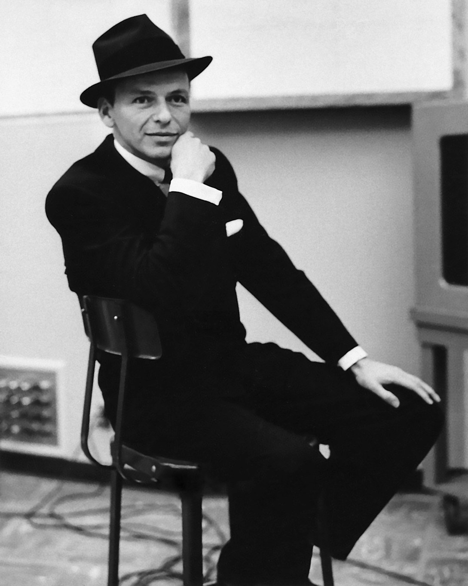

Топ-лот подборки
Фредди Меркьюри, Брайан Мэй, Роджер Тейлор и Джон Дикон (Queen)
Пластинка с 4-мя автографами
Все четверо на одном конверте — редкость уровня мировых аукционов: Фредди не стало в 1991-м.
Стоимость2 500 000 ₽
Наши голоса
Цой и Высоцкий
Галстук Виктора Цоя с дарственной надписью и собственноручное письмо Владимира Высоцкого. Два предмета, две легенды, мимо которых не пройти.

Виктор Цой (Кино) — Галстук с дарственной надписью2 500 000 ₽

Владимир Высоцкий — Собственноручное письмо4 000 000 ₽

Фрэнк Синатра · Wikimedia Commons · public domain
Голос Америки
Фрэнк Синатра
Концертная рубашка из личного гардероба артиста
Рубашка, в которой он выходил к залу. My Way — в шкафу вашего друга.
Стоимость1 150 000 ₽


Imagine · личная вещь
Джон Леннон (The Beatles)
Зонтик из личной японской коллекции певца
Вещь из токийских лет Джона и Йоко. Не автограф — часть быта человека, изменившего музыку.
Стоимость3 200 000 ₽